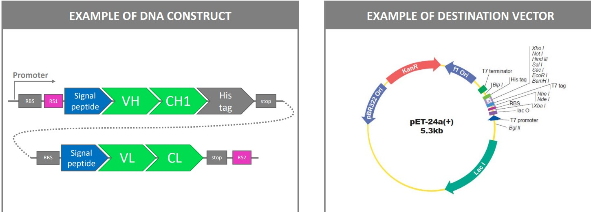
3 Pre-clinical Validation of Antibodies
This lecture deals with the following concepts:
- Antibody sequence cloning for recombinant expression
- Antibody production
- Antibody purification
- Binding validations
- Activity validation
3.1 Generating Antibody Binding Fragments (i.e., Fab)
3.1.1 Antibody Generation Methods
One possible option involves animal production - this was covered in the previous week’s lecture on designing and producing therapeutic antibodies.
Otherwise, phage display libraries can also be used as an alternative to animals.
Recall from the beginning of the second lecture that an antibody’s Fc region has various surfaces that perform different functions.
3.1.2 Cloning Antibodies into Expression Vectors
The above figure shows an example of how genes that encode for an antibody’s Fab region can be cleaved and integrated into a bacterium’s plasmid for.
This typically happens in the periplasm where disulfide-bridge formation usually occurs.
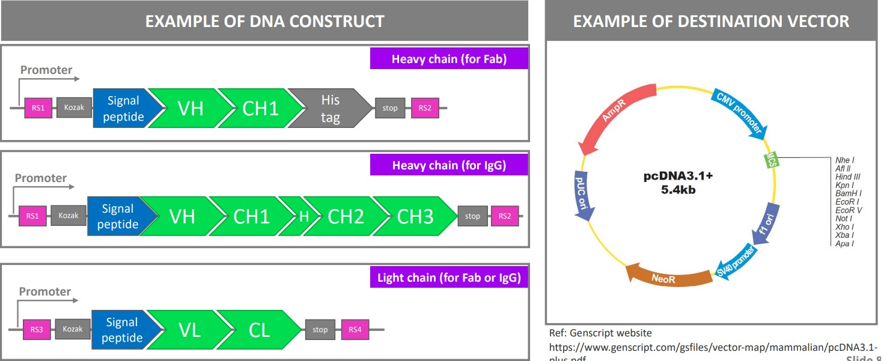
Otherwise, Fab fragments and IgG antibodies can also be produced recombinantly in mammalian cells before being secreted into media.
3.2 Production Systems
Mammalian systems are the typical go-to system for bio-pharmaceutical companies. The usage of mammalian systems have increased by more than three times from 1989 and before to between 2015 and 2018.
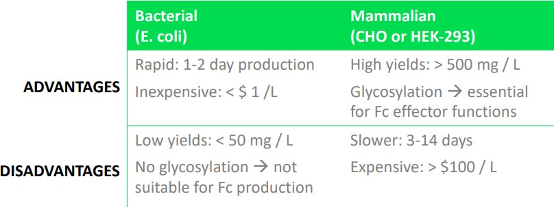
While bacterial systems are can be used to reduce production cost, they also come with their own set of disadvantages. Bacterial production systems are generally used in validation systems.
Other expression systems not covered in BS4019 include: yeast cells, insects, and murine (i.e., mouse) N50 cell lines.
3.3 Purification Systems
3.3.1 Affinity Chromatography
Affinity chromatography is the purification of a compound based on its specific bindings.
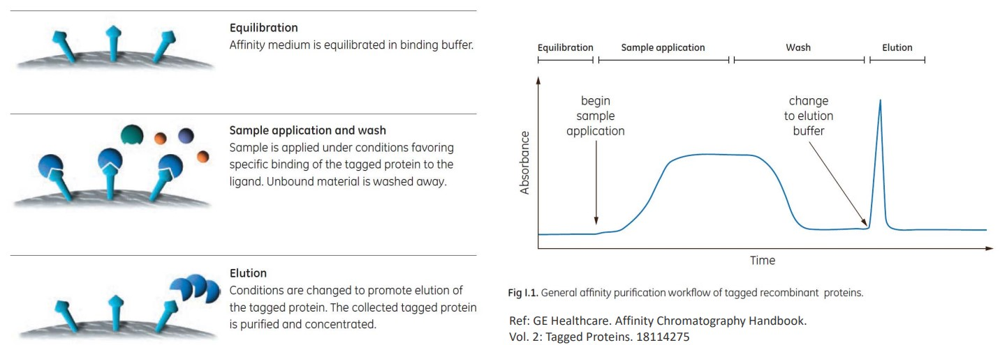
The above steps outline how a specific antibody can be filtered out from a solution containing many kinds of antibodies.
Nevertheless, there are also the following methods in purification:
IMAC
This is short for Immobilized-Metal Binding Chromatography. Here, proteins of histidine-tagged proteins are done on a Ni2+ or Co2+ column.
Imadazole is used as the eluding agent.
Protein A Purification
Antibodies are purified on a protein A column. This is done at a low pH.
Protein G Purification
Antibodies are purified on a protein G column. This is done at a low pH.
3.3.2 Ion Exchange
Ion exchange are purification systems that are based on charges.
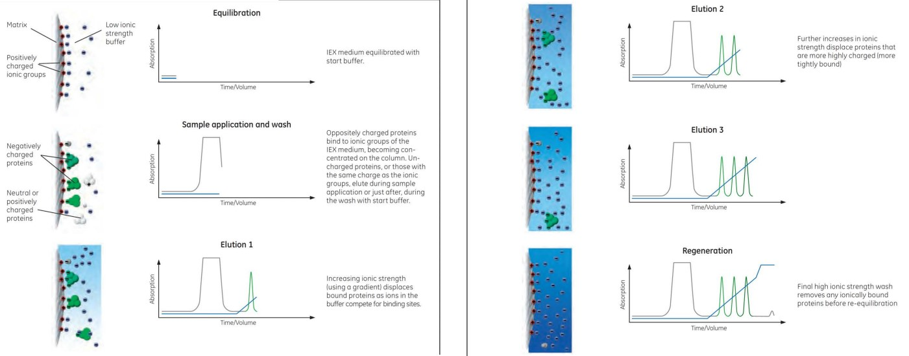
Anion exchange is ion exchange with negatively-charged proteins while cation exchange is the purification of positively-charged proteins.
3.3.3 Size Exclusion Chromatography
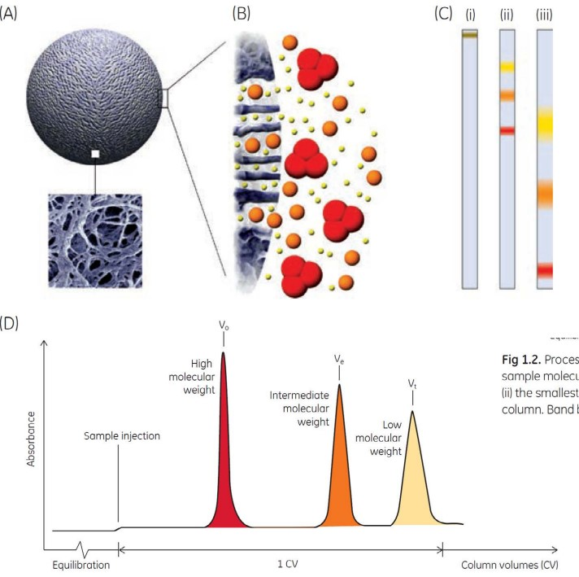
Size exclusion chromatography purifes compounds based on their sizes.
While this technique is used in research settings, it is not suitable for industrial purifications of mAbs.
3.3.4 ELISA
ELISA is short for Enzyme-Linked Immunosorbent Assay.
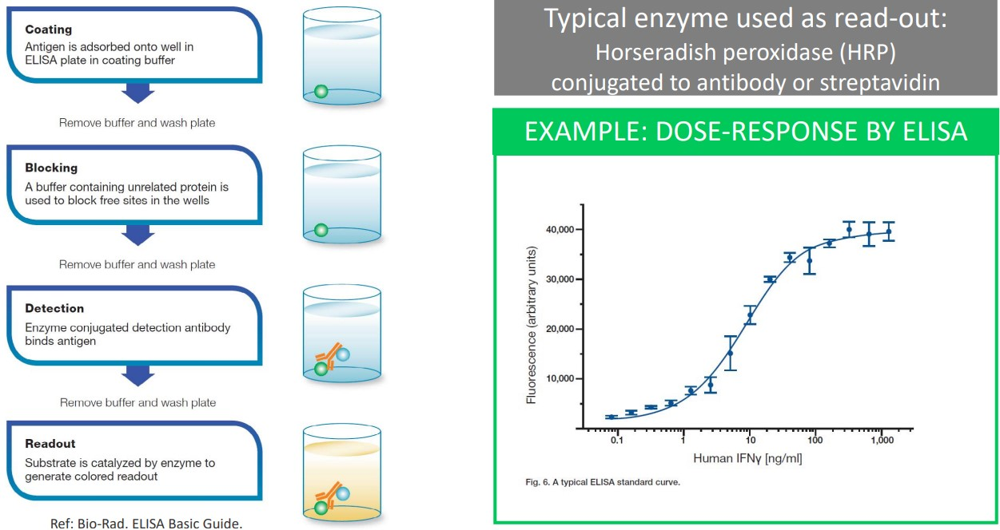
Horseradish peroxidase (i.e., HRP) is an enzyme used in ELISA; it is conjugated to an antibody or streptavidin.
3.4 Binding Validations
This can happen in one of many methods:
3.4.1 via ELISA
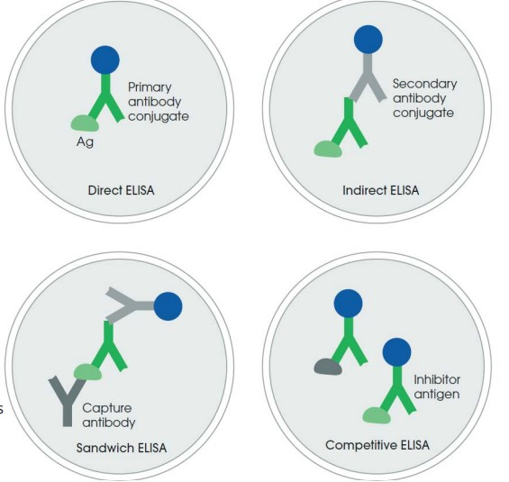
ELISA can be used in binding validation in one of many ways:
Direct ELISA
This is the simplest format; it needs a HPR-conjugated primary antibody.
Indirect ELISA
This is easier to set up and uses a secondary antibody-HRP conjugate.
The primary and secondary antibody must be of different species.
Sandwich ELISA
This is more specific as the target is captured by the specific antibody.
This technique also requires two antibodies against the target’s different epitopes.
Competitive ELISA
Proteins in solution compete with the immobilized target, hence reducing the signal.
This is used in epitope mapping and activity assays.
3.4.2 Surface Plasmon Resonance (i.e., SPR)
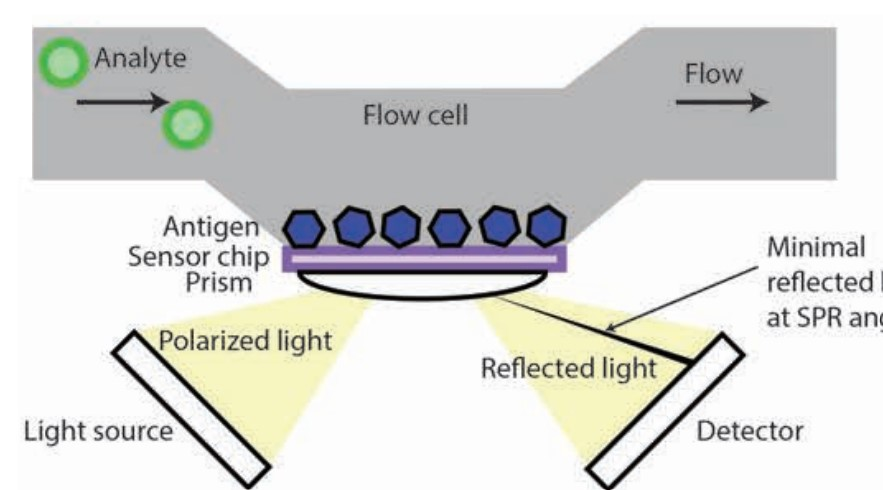
This was prof. Asial’s PhD during his 2013 stint with NTU.
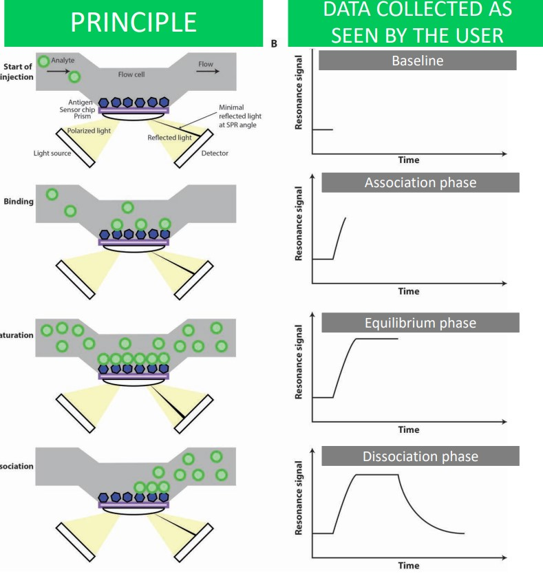
The general idea behind this validation method is that analyte binding changes the angle of reflected light.
When an analyte is introduced, it passes through a blank flow cell and becomes immobilized on a chip that contains an antigen. A thin layer of gold opposite the aforementioned chip is excited by polarized light from a prism - this reflected light is captured on a detector.
When the antigen and antibody binds, there is an increase in mass and also a change in refractive angle (i.e., Figure B). The binding eventually reaches saturation - the maximum refractive angle - before it returns back to the original baseline.
3.4.3 Biolayer Interferometry (i.e., BLI)
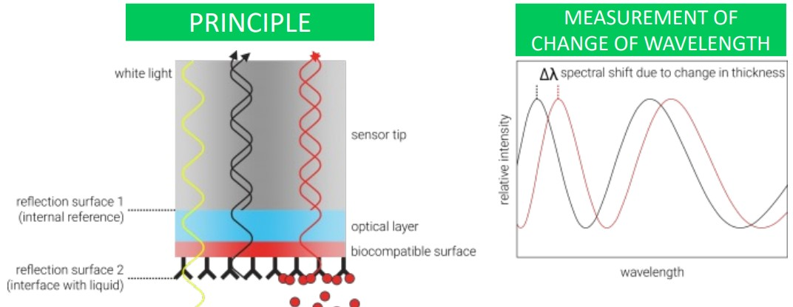
This method measures the change in light wavelength due to thickness changes at the end of a fibre optic tip.
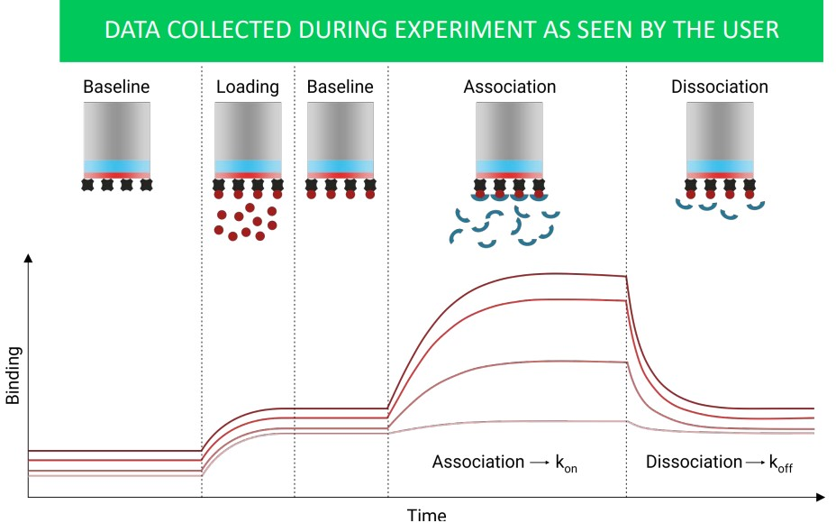
The above graph shows what data collected during a BLI may appear as to the user.
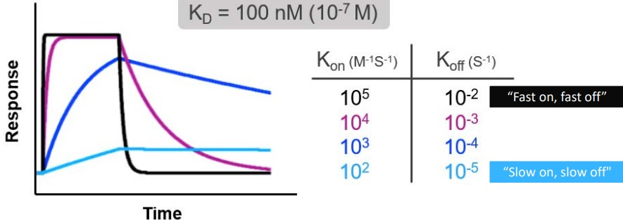
Both SPR and BLI measure binding affinity. The following terms are used:
- \(k_a\) is the association constant measured in M-1s-1
- \(k_d\) is the disassociation constant measured in s-1
- \(K_d\) is the equilibrium disassociation constant in M. Note that \(\displaystyle K_d = \frac{k_d}{k_a}\).
For antibodies, a fast \(k_\text{on}\) and a slow \(k_\text{off}\) is preferred.
\(k_D\) should be less than 10 nM in the Fab format while \(k_D\) should be less than 5 nM in the IgG format.
3.4.4 Flow Cytometry
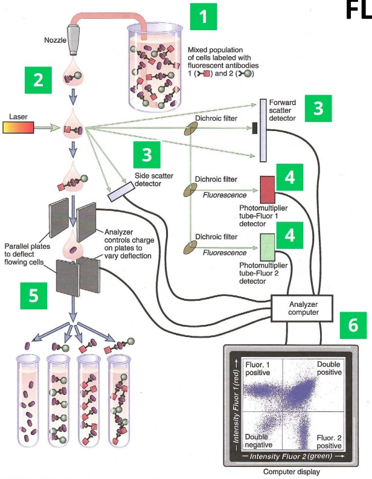
There are a handful of steps:
- Antibodies are labelled using fluorescence and put in contact with target cells.
- Cells flow through the laser one at a time.
- Light scattering detectors help determine particle size to identify different cell types.
- Fluorescence detectors detect antibodies found in cells.
- In some settings, cells can be sorted to fluorescence.
- The data is analyzed using software.
3.5 Activity Assays
3.5.1 ELISA-Based Assays
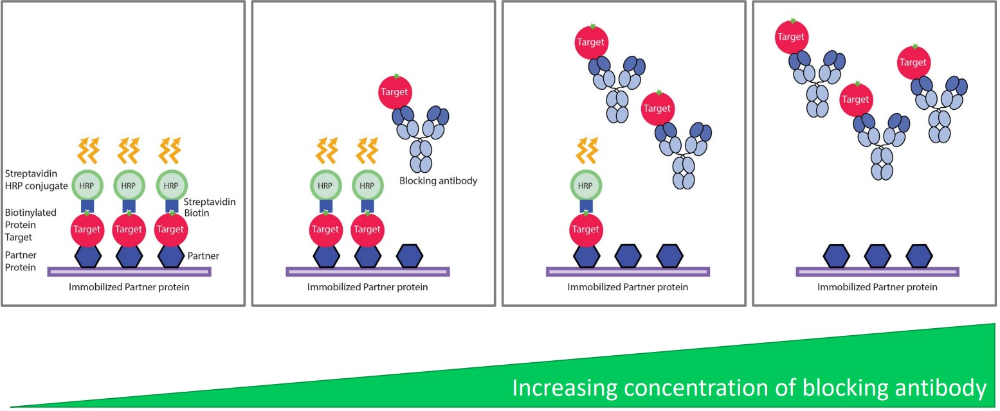